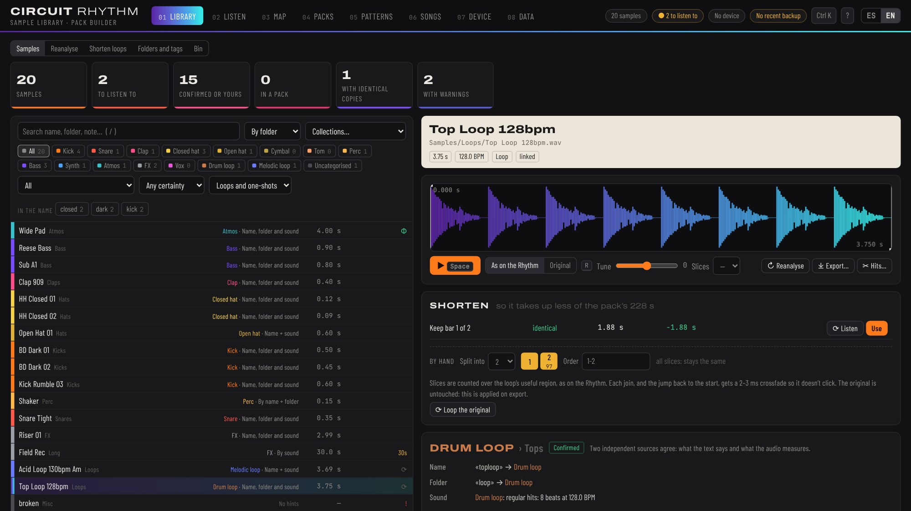
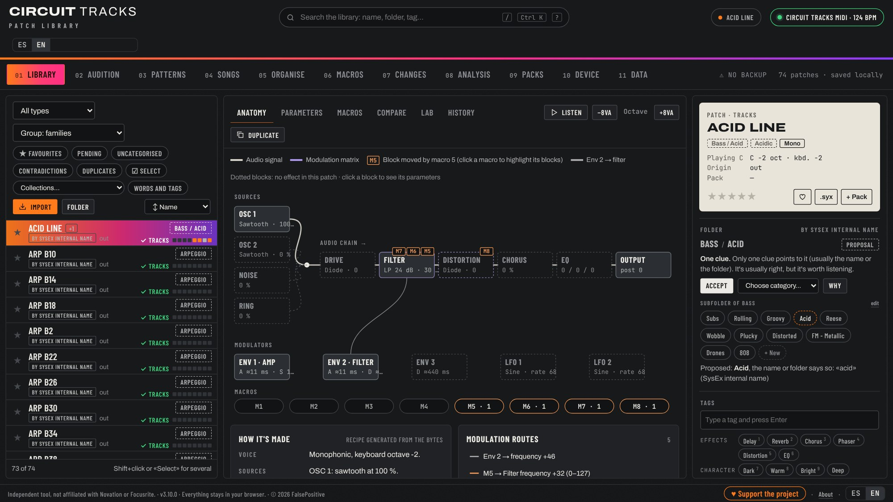

Circuit Rhythm
Sample Library / Pack Builder
Sort your samples while you listen, prepare them for the Rhythm and build packs for Components or the SD card.
Free, local browser tools for the Novation Circuit Rhythm and Circuit Tracks.
Herramientas gratuitas y locales para la Circuit Rhythm y la Circuit Tracks, en español y en inglés.

Sort your samples while you listen, prepare them for the Rhythm and build packs for Components or the SD card.

Hear every patch on your Tracks and sort by ear, look inside each sound, make variations and build packs.